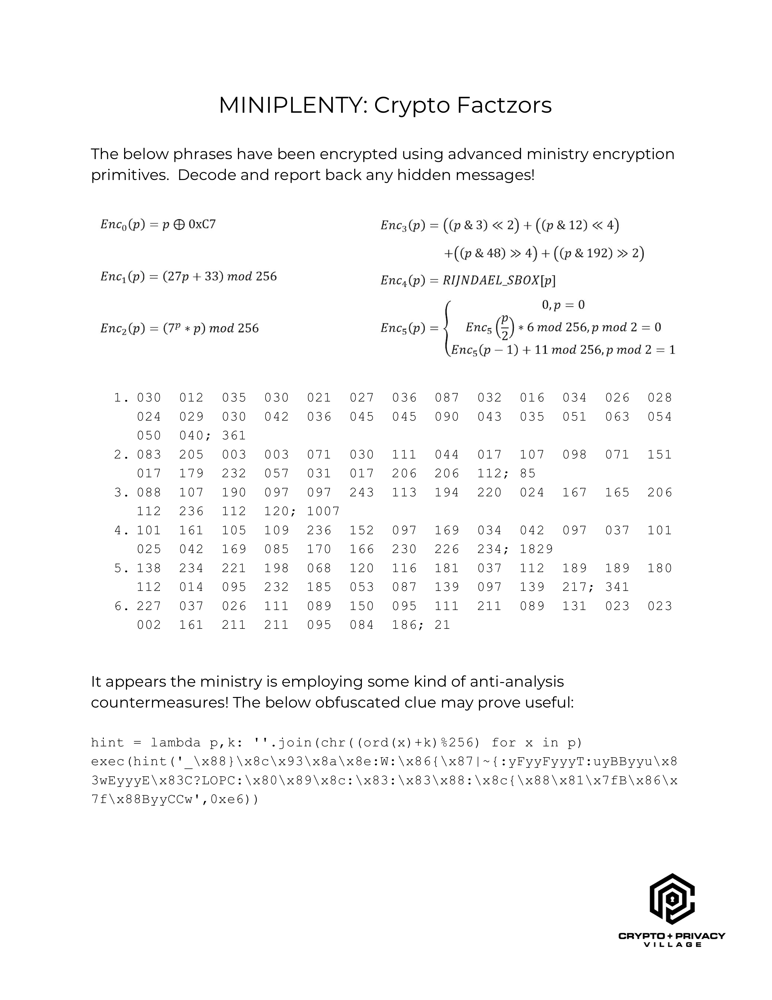

 MINIPLENTY: Crypto Factzors The below phrases have been encrypted using advanced ministry encryption primitives. Decode and report back any hidden messages!1. 030 012 035 030 021 027 036 087 032 016 034 026 028 024 029 030 042 036 045 045 090 043 035 051 063 054 050 040; 361 2. 083 205 003 003 071 030 111 044 017 107 098 071 151 017 179 232 057 031 017 206 206 112; 85 3. 088 107 190 097 097 243 113 194 220 024 167 165 206 112 236 112 120; 1007 4. 101 161 105 109 236 152 097 169 034 042 097 037 101 025 042 169 085 170 166 230 226 234; 1829 5. 138 234 221 198 068 120 116 181 037 112 189 189 180 112 014 095 232 185 053 087 139 097 139 217; 341 6. 227 037 026 111 089 150 095 111 211 089 131 023 023 002 161 211 211 095 084 186; 21 It appears the ministry is employing some kind of anti-analysis countermeasures! The below obfuscated clue may prove useful: hint = lambda p,k: ''.join(chr((ord(x)+k)%256) for x in p) exec(hint('_\x88}\x8c\x93\x8a\x8e:W:\x86{\x87|~{:yFyyFyyyT:uyBByyu\x83wEyyyE\x83C?LOPC:\x80\x89\x8c:\x83:\x83\x88:\x8c{\x88\x81\x7fB\x86\x7f\x88ByyCCw',0xe6)) CPV BBS - The Gold Bug